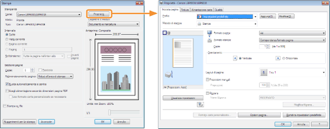
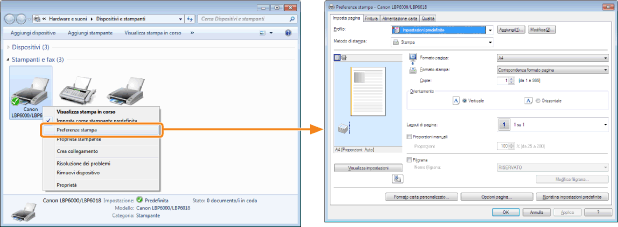
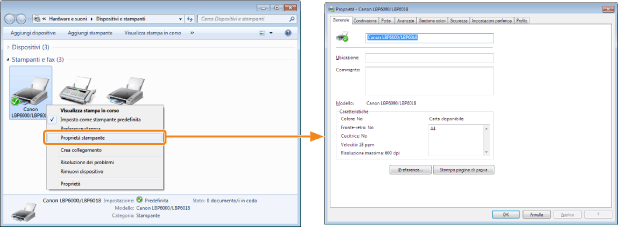

Nella schermata delle impostazioni è possibile specificare le varie preferenze di stampa del driver della stampante.
La schermata delle impostazioni può essere aperta nei modi seguenti.
Visualizzazione da un'applicazione
Le impostazioni specificate si applicano solo ai dati da stampare dalla stessa applicazione. Chiudendo l'applicazione, le impostazioni modificate vengono riportate ai valori predefiniti.
|
Come visualizzare
(la procedura può variare in base all'applicazione utilizzata).
|

Visualizzazione dalla cartella delle stampanti ( "Operazioni di base e informazioni varie per Windows")
"Operazioni di base e informazioni varie per Windows")
"Operazioni di base e informazioni varie per Windows")<Schermata delle preferenze di stampa>
È possibile cambiare i valori predefiniti delle preferenze di stampa in modo da applicarli a tutti i dati.
|
Come visualizzare
Fare clic con il tasto destro del mouse sull'icona della stampante e scegliere [Preferenze stampa] dal menu di scelta rapida.
|

<Schermata delle proprietà della stampante>
È possibile selezionare le impostazioni relative ai "profili" da aggiungere al server e altro ancora.
|
Come visualizzare
Fare clic con il tasto destro del mouse sull'icona della stampante e scegliere [Proprietà stampante] o [Proprietà] dal menu di scelta rapida.
|

|
NOTA
|
|
Per ulteriori dettagli sulle impostazioni
Vedere la guida.
Informazioni sulle schede visualizzate da Windows
In Windows appaiono le seguenti schede: Per ulteriori dettagli, vedere la guida di Windows.
Scheda [Generale]
Scheda [Condivisione]
Scheda [Porte]
Scheda [Avanzate]
Scheda [Gestione colori]
Scheda [Protezione]
Informazioni sul driver della stampante
Le funzioni del driver della stampante possono cambiare a seguito dell'aggiornamento.
|